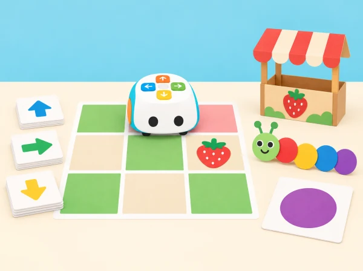
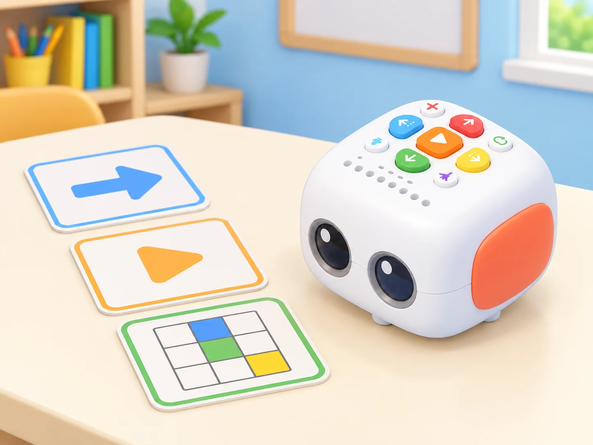
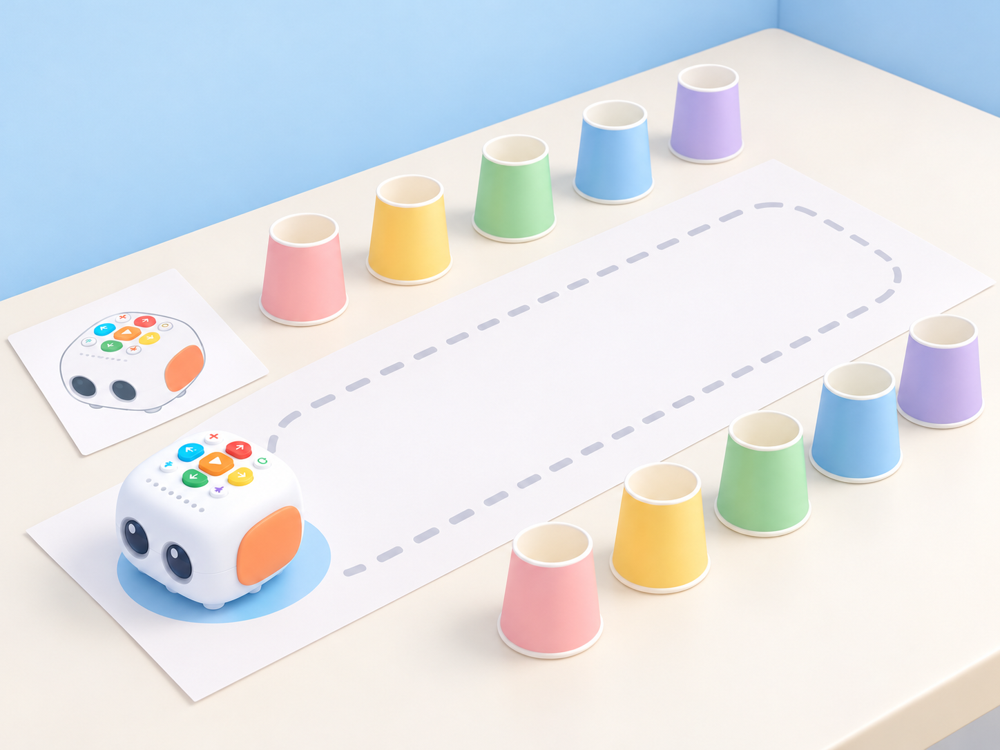
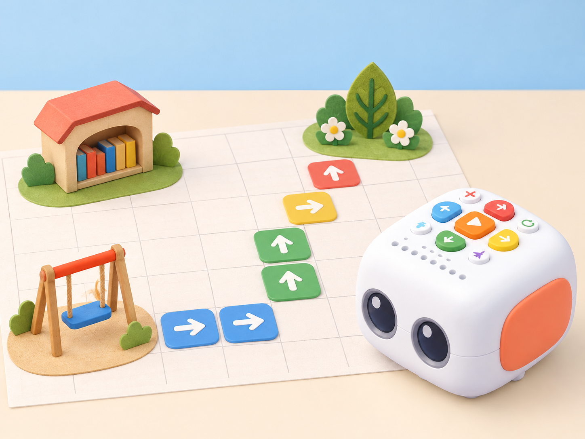
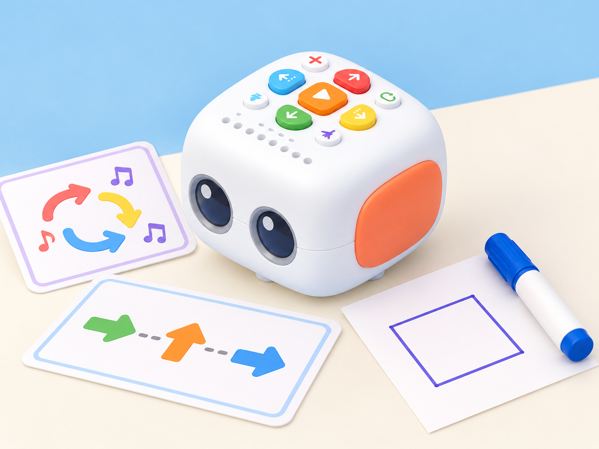
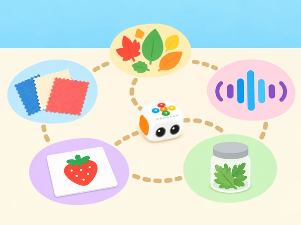
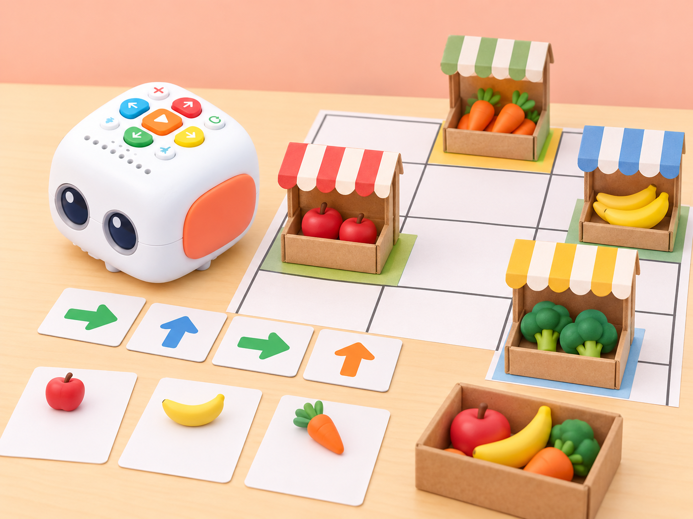
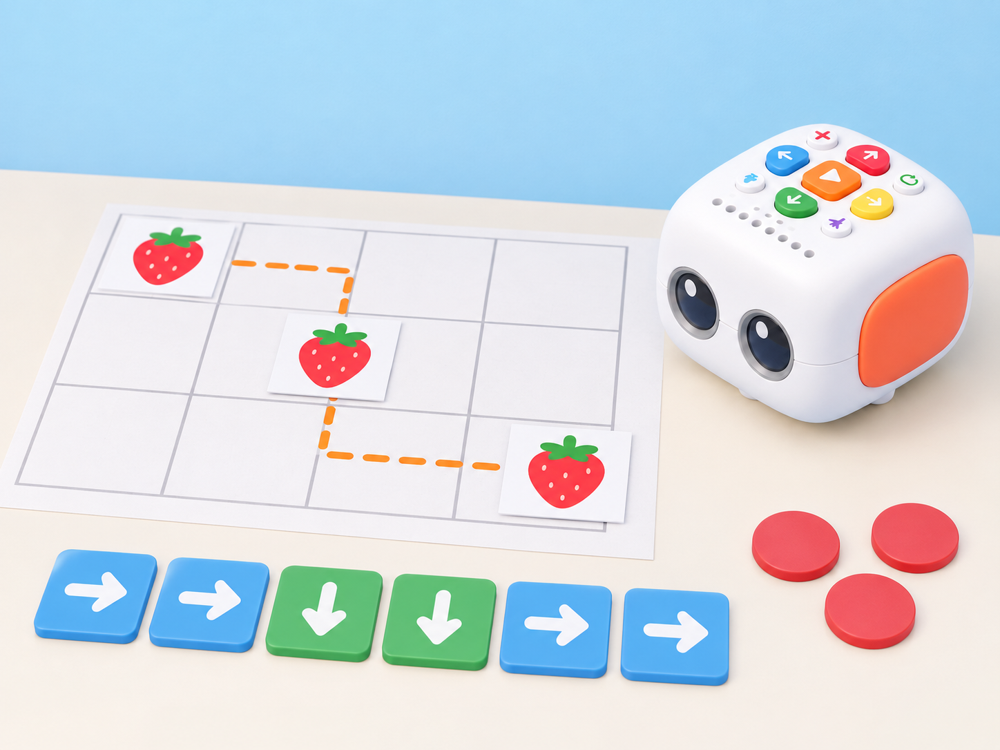
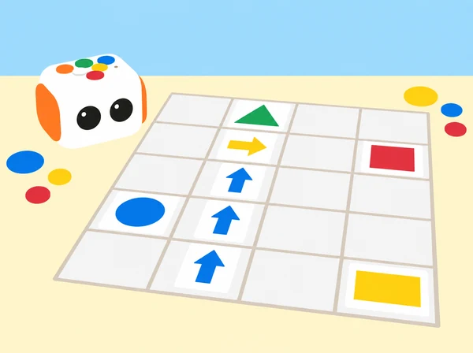
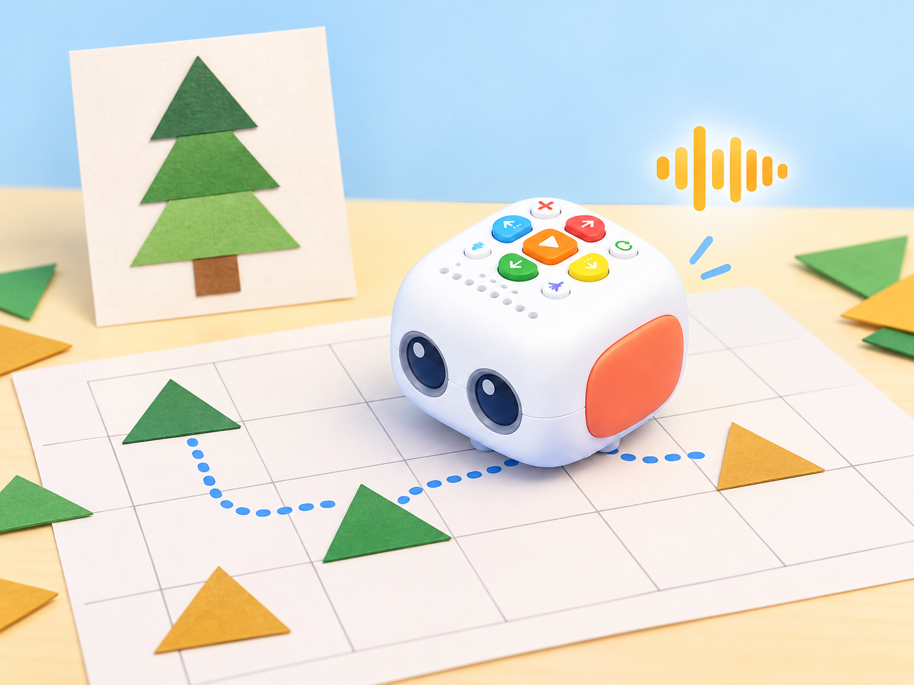

La fira de descobertes de l'escola
🏷️ Escola i barri
🌱 Situació, repte i intenció
Aquesta seqüència comença amb una sessió pròpia que adapta els objectius públics de la primera lliçó del nivell 1 —reconéixer Tale-Bot Pro i les seues parts i botons, practicar l’encesa/apagada i tractar el robot amb cura— i continua amb propostes temàtiques basades en els títols públics de les lliçons 3–9. La segona lliçó («On són els animals de la granja?») té una adaptació separada a El rastre del corral. Els plans complets de les lliçons 3–9 no s’han pogut consultar;
les sessions corresponents adapten els temes i la progressió pública, sense atribuir al fabricant objectius o passos que no es poden verificar.
🎯 Aprenentatges i vocabulari
Llegir una graella, anticipar el resultat, provar una seqüència, comparar-la amb l’observació i justificar una correcció. Els criteris i les bastides per a diferents ritmes estan desenvolupats en la guia docent complementària.
🧰 Materials i preparació
Tale-Bot Pro de la dotació, mapes i targetes propis, fitxes reutilitzables i materials indicats en cada sessió. Comproveu els accessoris abans d’utilitzar-los; la guia docent amplia la preparació i les alternatives.
📅 Seqüència didàctica
Hola, Tale-Bot: el coneixem i el cuidem (40 min)
Fase 1 · Activem i prediem
Presenteu el Tale-Bot Pro del centre com una màquina que respon a instruccions. Compareu-lo amb una persona i amb un vehicle de joguina: quines accions pot fer cadascun, què necessiten per funcionar i quines idees són només suposicions? L’objectiu és despertar curiositat i reconéixer que el robot no té intencions humanes: el grup decideix les instruccions i comprova la resposta. Acordeu també una norma observable de cura, com ara esperar que el robot s’ature abans d’alçar-lo.
Fase 2 · Explorem i construïm
Amb un Tale-Bot apagat, observeu-ne el cos, les rodes, els botons i els indicadors lluminosos. Useu una maqueta o silueta de paper pròpia per assenyalar cada part i relacionar-la amb una funció que després comprovareu. Si el kit del centre els inclou, mostreu les ales i el suport per a dibuixar o construir; són peces de caracterització o accessoris, no parts que el robot puga moure de manera autònoma.
Prepareu deu gots de paper lleugers com a fites per a una ruta, no com a obstacles per colpejar, i cinta de pintor per a fixar el mapa sense deixar adhesiu al robot. La pàgina pública de la lliçó 1 enumera el robot, una maqueta de paper, ales, suports per a dibuix/construcció, deu gots i cinta entre els materials; els accessoris s’usen només si formen part de la dotació del centre.

Fase 3 · Expliquem i registrem
En parelles, ordeneu targetes pròpies de «encendre», «introduir una ordre», «prémer Play» i «observar». Amb supervisió, cada equip encén i apaga el robot segons la guia del centre i comprova les quatre ordres de moviment bàsic —avant, arrere, esquerra i dreta— en una superfície plana. Abans de prémer Play, observeu els indicadors que corresponen a les ordres introduïdes; després, comproveu si el recorregut coincideix amb la predicció.
Anoteu què han fet realment els botons i quina part del procés depén de les persones.
Fase 4 · Apliquem i millorem
Prepareu una zona plana, neta i allunyada de vores. Col·loqueu els deu gots com a dues files de fites i creeu una destinació pròpia amb una targeta «hola»; la ruta ha de passar per un corredor ample sense tocar els gots. Una parella tria el punt d’inici, orienta el robot i prediu les ordres; l’altra observa els indicadors i comprova el trajecte. Si no coincideixen, canvieu una sola ordre o corregiu l’orientació i torneu a provar.
Qui no manipule el robot pot dirigir la seqüència amb targetes, portar el registre o assenyalar l’accessori que s’està observant.

Fase 5 · Comprovem i reflexionem
L'escola de Tale-Bot — «Matatalab School»
Fase 1 · Activem i prediem
Observeu la planta simplificada de l’aula i les tres destinacions. Trieu una ruta entre dos llocs i feu una predicció amb targetes: quantes ordres cap avant necessitarà Tale-Bot si comença orientat cap a la biblioteca? Assenyaleu inici, orientació i meta abans de programar.
Fase 2 · Explorem i construïm
Dibuixem una planta senzilla de l'aula amb tres llocs d'interés (biblioteca, hort o pati). Per parelles, triem un destí, escrivim una seqüència d'ordres i expliquem com l'hem calculada. Una persona fa de robot en la graella de paper i després comparem la representació amb el recorregut del Tale-Bot real. Tanquem amb una instrucció per a les visites de la fira.

Fase 3 · Expliquem i registrem
Representeu la ruta amb una tira d’ordres i expliqueu cada pas amb «des de… avance… caselles». Registreu la casella inicial, l’orientació, la meta, la seqüència prevista i la posició final observada. Una altra parella ha de poder reconstruir el trajecte només amb el registre.
Fase 4 · Apliquem i millorem
Feu que una parella diferent execute la mateixa seqüència des del mateix inici i sense explicacions orals durant el moviment. Si arriba a una casella diferent, reviseu primer l’orientació i després una ordre cada vegada. Marqueu la versió inicial i la corregida i comproveu si una visita pot seguir el mapa sense ajuda.
Fase 5 · Comprovem i reflexionem
Un robot, moltes respostes — «Versatile Matatalab Robot» (50 min)
Fase 1 · Activem i prediem
Mireu quatre targetes de repte: arribar a una casella, repetir un moviment, enregistrar una salutació fictícia i dibuixar un traç. Predigueu quines accions depenen dels botons, quines de l’àudio i quina necessita l’accessori de dibuix. Distingiu una resposta observable del robot d’una interpretació humana com ara «estar content».
Fase 2 · Explorem i construïm
Preparem una ruta curta en paper i assagem ordres bàsiques fins a una destinació. El botó de dansa activa una de les sis danses predefinides a l’atzar: l’activem dues vegades i anotem què observem, sense esperar que repetisca la mateixa coreografia. En un tram pla i delimitat, programem una repetició finita d’una ordre o d’un patró breu i comptem les execucions; el mode infinit només es representa amb targetes i no s’executa amb el robot.
Si el kit del centre inclou el suport i el retolador rentable, fem un traç curt en un full fixat; si no, representem el recorregut amb targetes de paper.

Fase 3 · Expliquem i registrem
Enregistreu una salutació fictícia de pocs segons mantenint premut el botó de gravació mentre parleu; deixeu-lo anar per acabar i escolteu la reproducció de comprovació. La guia del fabricant limita cada enregistrament a 30 segons. Afegiu l’ordre de gravació al final d’una seqüència, feu una pulsació breu (menys d’un segon) per reutilitzar l’àudio en una segona parada i compareu què es repeteix. No graveu noms, dades personals ni veus identificables sense autorització;
si la norma del centre no permet enregistrar veus, el docent pot preparar una frase fictícia o l’equip pot usar un pictograma sense gravació. Registreu en una taula la seqüència, el resultat observable i el material necessari.
Fase 4 · Apliquem i millorem
Proveu per separat una ruta, la repetició finita, la salutació enregistrada en dues parades i, si hi ha accessori, el dibuix. Esborreu la seqüència entre proves i canvieu una sola variable cada vegada. Si el traç ix del full, fixeu millor el paper o reduïu el recorregut. En acabar, esborreu la seqüència i elimineu l’enregistrament segons la guia del centre. La dansa, l’àudio i el dibuix són opcions si la configuració o els accessoris del kit no estan disponibles.
Fase 5 · Comprovem i reflexionem
El recorregut dels cinc sentits — «My Five Senses»
Fase 1 · Activem i prediem
Trieu tres pictogrames d’estació i decidiu un ordre de visita. Abans de moure cap material, predigueu quina seqüència de moviments serà necessària i quina característica es podrà observar en cada parada. Recordeu que Tale-Bot no té sensors de gust, olfacte, tacte, oïda o visió: l’observació la fan les persones.
Fase 2 · Explorem i construïm
Prepareu cinc estacions amb pictogrames: colors, un so ambiental suau triat pel docent, retalls nets de tela, una imatge de fruita i un recipient tancat amb una herba culinària coneguda. No tasteu aliments ni obriu ni acosteu recipients al nas. Qualsevol infant pot passar una estació o participar mirant i assenyalant. Trieu tres parades, ordeneu-les amb targetes i traceu la ruta sobre el mapa. Tale-Bot només indica el recorregut; les persones observen i descriuen.

Fase 3 · Expliquem i registrem
En parella, repartiu els rols de programar i observar. En cada parada, registreu una característica amb pictograma o paraula i distingiu dues columnes: «què ha fet el robot» i «què hem observat nosaltres». No anoteu preferències, salut, noms ni experiències personals. Si només hi ha un robot, els altres equips planifiquen la ruta en paper mentre esperen torn.
Fase 4 · Apliquem i millorem
Canvieu l’ordre de dues estacions i predigueu si cal una seqüència diferent. Executeu-la des del mateix punt d’inici i compareu només el recorregut; manteniu les mateixes targetes i la mateixa orientació. Oferiu una ruta alternativa de mirar o assenyalar, sense tocar, tastar ni olorar cap material.
Fase 5 · Comprovem i reflexionem
La botiga de temporada — «Matata Grocery Store»
Fase 1 · Activem i prediem
Llegiu una comanda de dos productes dibuixats i mireu el plànol de la parada. Predigueu quin producte visitareu primer, quantes ordres necessita el trajecte i quin serà el cost total si les fitxes indiquen preus. Els preus són dades del joc, no preus actuals del mercat.
Fase 2 · Explorem i construïm
Dissenyem una parada amb imatges de productes de mercat local i fitxes de preus senzills. Una targeta de comanda demana visitar dos productes; l'equip calcula la ruta i, si és adequat al nivell, suma dos preus. El robot lliura una fitxa de paper i una persona comprova que la comanda coincideix. Els aliments són dibuixats o de joguina: no es manipula ni es reparteix menjar real.

Fase 3 · Expliquem i registrem
Traceu el programa sobre una graella i anoteu el recompte de moviments entre cada producte. En un registre diferent, sumeu els dos preus i escriviu l’operació. La persona que rep la comanda comprova la seqüència i la suma per separat: una ruta correcta no garanteix una suma correcta.
Fase 4 · Apliquem i millorem
Intercanvieu la comanda amb una altra parella. Feu una primera prova de ruta, lliureu una fitxa per producte i reviseu si la llista i la suma coincideixen. Si hi ha error, indiqueu si és de moviment, ordre de visita o càlcul; canvieu-ne només un i torneu a provar des del mateix inici.
Fase 5 · Comprovem i reflexionem
Quantes maduixes hi ha? — «Count Strawberries I»
Fase 1 · Activem i prediem
Observeu les caselles amb grups de maduixes de paper i trieu una ruta. Predigueu el total abans de comptar i decidiu com marcareu cada casella visitada perquè cap grup es compte dues vegades ni se n’oblide cap.
Fase 2 · Explorem i construïm
Situem grups de maduixes de paper en diverses caselles. Abans de programar, cada equip prediu quantes trobarà en una ruta i tria com evitar comptar-ne alguna dues vegades. Després segueix el recorregut, marca cada grup visitat i compara predicció i recompte. Com a ampliació, canviem l'ordre dels estands i comprovem si el total es manté.

Fase 3 · Expliquem i registrem
Useu una taula amb casella, quantitat observada i subtotal acumulat. En cada parada, marqueu la casella només després de mirar-la; després, una segona persona torna a comptar els grups sense seguir el robot per comprovar el total per una via independent.
Fase 4 · Apliquem i millorem
Canvieu la posició d’un grup de maduixes, manteniu la resta igual i torneu a calcular el total. Compareu la predicció i el recompte abans/després. Si el total no canvia, expliqueu per què; si canvia, identifiqueu la casella modificada sense modificar també la ruta.
Fase 5 · Comprovem i reflexionem
El monstre de les formes — «Shape Monster I»
Fase 1 · Activem i prediem
Compareu les targetes de triangle, quadrat, cercle i rectangle. Trieu-ne una i predigueu quantes caselles o canvis de direcció caldran per visitar els punts de la seua vora en ordre, començant en una marca orientada.
Fase 2 · Explorem i construïm
Cada equip rep una silueta geomètrica gran i la descompon en fites de la graella. El robot visita els vèrtexs en ordre; el grup anota canvis de direcció i nombre de trams, i una persona uneix els punts en paper. Compareu triangles i quadrilàters sense exigir que Tale-Bot dibuixe: la línia es representa amb llapis després de la ruta.
Fase 3 · Expliquem i registrem
Registreu el nombre de trams rectes, les caselles de cada tram i els canvis de direcció observats. Una persona uneix els punts després del recorregut i identifica la forma; compareu el contorn amb la targeta sense dir que Tale-Bot dibuixa si no porta el suport i el retolador.
Fase 4 · Apliquem i millorem
Intercanvieu la ruta amb una parella que no coneix la forma triada. Si el contorn reconstruït no coincideix, reviseu una instrucció o un punt de gir i repetiu des del mateix inici. Compareu dues formes i determineu si el nombre de trams rectes basta per distingir-les o si també cal observar-ne la disposició.
Fase 5 · Comprovem i reflexionem

L'eruga artista — «Matata Artist—Caterpillar»
Fase 1 · Activem i prediem
Observeu una eruga formada per cercles de paper i trieu una regla senzilla, com ara blau–groc–blau–groc o gran–menut–gran–menut. Predigueu quin segment vindrà després i en quin ordre haurà de visitar Tale-Bot les parts del patró.
Fase 2 · Explorem i construïm
A partir d'una eruga de cercles de paper, triem un patró de colors o formes i construïm un recorregut perquè el robot visite els segments en l'ordre desitjat. Col·loquem un retolador rentable en el suport inclòs i comprovem el traç en paper gran, amb un adult que prepare el full i retire el retolador en acabar. Els infants expliquen la regla del patró i busquen un error o un canvi possible.
Si falta el retolador o el suport en la unitat del centre, resolen el mateix repte amb el mapa i les targetes de direcció.
Fase 3 · Expliquem i registrem
Dibuixeu la unitat que es repeteix i escriviu-la en una tira de targetes. Registreu quantes vegades apareix i assenyaleu el punt on la seqüència deixa de seguir la regla. Si utilitzeu el suport de retolador, descriviu el traç com un resultat del moviment, no com una forma que el robot reconega.
Fase 4 · Apliquem i millorem
Una altra parella continua el patró amb una peça tapada i programa una ruta que visite els segments en ordre. Compareu el programa amb la tira de targetes, corregiu només el primer punt on discrepen i torneu a executar. Si s’usa retolador, feu primer una prova curta en paper recuperable i fixeu el full; sense accessori, completeu la mateixa activitat amb fitxes i mapa.
Fase 5 · Comprovem i reflexionem
Ampliació inspirada en un estudi d’aula publicat per Matatalab: prepareu una quadrícula pròpia amb triangles de paper repartits en diverses caselles. La parella programa Tale-Bot perquè visite les posicions acordades; són els infants qui recullen les fitxes i les compten, perquè el robot no les pot agafar ni reconéixer. Conteu-les en valencià i, si el grup ho tria, en una altra llengua. Amb les fitxes, construïu un avet de paper i expliqueu quina figura plana forma cada peça.
Si el model del centre incorpora la targeta de micròfon, podeu enregistrar una frase fictícia breu i reproduir-la; també és vàlid narrar-la en directe o usar un pictograma. No graveu noms ni veus identificables sense autorització i esborreu els enregistraments en acabar.

🧪 Evidències i avaluació
Cada sessió demana una predicció, un registre de la prova i una explicació o canvi justificat. La graella d’observació i el diari de proves es troben en la guia docent complementària.
♿ Participació, accessibilitat i seguretat
Les rutes es poden anticipar en paper i les respostes es poden donar oralment, amb pictogrames o manipulant targetes. Les opcions sensorials, la privacitat i les normes dels accessoris estan detallades en la guia docent.
🔗 Referents i adaptació
La sessió inicial adapta els objectius públics de L1; els plans complets de L3–L9 no s’han pogut consultar i ací només s’adapten els seus temes visibles. La sessió 2 comprova funcions descrites en la guia oficial de Tale-Bot Pro —dansa aleatòria, enregistrament i repetició—, però no atribueix aquesta seqüència pròpia al pla docent no consultable de L4. L’ampliació dels triangles parteix d’un estudi d’aula italià publicat pel fabricant, no d’una lliçó numerada ni d’un pla docent complet.
La proposta crea mapa, fitxes, seqüència i evidències pròpies, i delimita les accions humanes i l’ús opcional de veu. L’auditoria de fonts i les limitacions estan documentades en la guia docent de la fira.